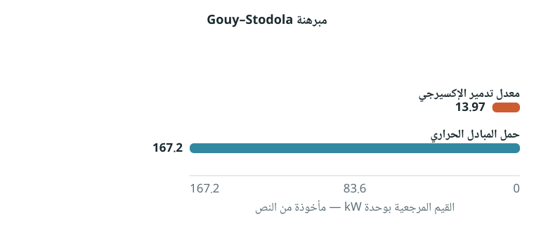

مبرهنة Gouy–Stodola
Gouy-Stodola Theorem
معدل تدمير الإكسيرجي في عملية يساوي حرارة المحيط المطلقة مضروبة في معدل توليد الإنتروبيا: İ = T₀·Ṡ_gen، ووحدته واط؛ أي أن الفوضى تُحاسَب بعملة القدرة.
مبرهنة Gouy–Stodola تربط ما تفقده العملية من قدرة بما تولّده من إنتروبيا: معدل تدمير الإكسيرجي يساوي درجة حرارة المحيط المطلقة مضروبة في معدل توليد الإنتروبيا، أي İ = T₀·Ṡ_gen. ونسبتها إلى Gouy (1889) وStodola (1903) لأن كليهما صاغها من جهة الآلات البخارية. ومصادر التوليد أربعة تُجمع ولا تُطرح: انتقال حرارة عبر فرق حراري محدود، واحتكاك أو هبوط ضغط، وخلط بين تيارين مختلفين، وتفاعل كيميائي غير عكوس. ولهذا تُستعمل المبرهنة في تدقيق الإكسيرجي: تُحسب Ṡ_gen لكل وحدة، ثم تُضرب في T₀ فتصير الخسائر كلها بمقياس واحد هو الكيلوواط، فتُقارن الوحدات وتُرتَّب أولويات الإصلاح. ومثال مبنيًّا على أرقام: مبادل حراري بين تيارين يُولّد 0.0469 kW/K فيُفقد 298.15 × 0.046854 = 13.97 kW، من أصل 21.76 kW إكسيرجي في التيار الساخن.
كيف تعمل الظاهرة؟
الإنتروبيا تُولَّد حيث يحدث التبادل عبر فرق محدود: الحرارة تعبر من جسم أسخن إلى أبرد فتزيد إنتروبيا البارد أكثر مما تنقص إنتروبيا الساخن. والاحتكاك يحوّل شغلًا إلى حرارة عند درجة أقل، والخلط يزيل فرق تركيز قابلاً للعمل، والاختناق يهبط بالضغط بلا استخراج شغل. وT₀ هي سعر الإنتروبيا: كل وحدة إنتروبيا مولّدة تُلغي إمكان استخراج T₀ وحدة طاقة من محيط لا نهائي عند تلك الحرارة، ولهذا يزيد الثمن بازدياد برودة المحيط.
العلاقة بالأرقام
الوحدات أولًا: [T₀] = K و[Ṡ_gen] = kW/K، فحاصل ضربهما kW؛ وبالصيغة الجولية J/K × K = J. والحساب المبيَّن لمبادل بتيارين متماثلين ṁ = 1 kg/s وcp = 4.18 kJ/(kg·K): الساخن 363.15 K إلى 323.15 K يعطي ΔṠ = 1 × 4.18 × ln(323.15/363.15) = −0.4878 kW/K، والبارد 293.15 K إلى 333.15 K يعطي ΔṠ = 1 × 4.18 × ln(333.15/293.15) = +0.5347 kW/K، فالمجموع Ṡ_gen = 0.046854 kW/K وهو موجب كما يقتضي المبدأ. ثم İ = 298.15 × 0.046854 = 13.97 kW. وحمل المبادل Q = 1 × 4.18 × 40 = 167.2 kW، وإكسيرجي التيار الساخن قبل التبادل 1 × 4.18 × [(363.15 − 323.15) − 298.15 × ln(363.15/323.15)] = 21.76 kW، فنسبة التدمير 13.97 ÷ 21.76 = 64.2%.
مفاهيم متقاربة
الخطأ الحسابي الشائع أن تُضاف الخسارة إلى ميزانية الطاقة، فتُجمع الإنتروبيا مع الجول. الطاقة محفوظة، والإكسيرجي هي ما يُستهلك، والمبرهنة تعمل في حقل الإكسيرجي وحده. والخطأ الثاني أن تُحسب Ṡ_gen من فرق حرارة التيارين مباشرة بلا لوغاريتم، فيُهمل أن التوليد يعتمد على مستويي الحرارة لا على فرقهما فقط. والثالث أن تُقارن وحدتان بمقياسين مختلفين: kW/K كمية فيزيائية، وkW معدّل تدمير؛ ولا تُجمع إحداهما إلى الأخرى.
حدود التطبيق
تشترط المبرهنة محيطًا واحدًا عند T₀، فإن تبادل النظام حرارة مع خزان عند T_b ≠ T₀ وجب إدخال معامل (1 − T₀/T_b) في ميزانية الإكسيرجي، وإلا نُسب إلى التوليد ما ليس منه. واختيار T₀ اعتباطي في الظاهر لكنه يغيّر المقدار، فالمقارنة لا تصحّ بين دراستين بمحيطين مختلفين. وتفقد الصيغة المعدّلية معناها في العمليات العابرة إن خُلطت الكميات بالمعدّلات. وأخيرًا لا تعطي المبرهنة كلفة اقتصادية ولا موقعًا هندسيًّا للخسارة إن لم تُحسب Ṡ_gen لكل وحدة على حدة.

| الكمية | القيمة | المصدر |
|---|---|---|
| معدل توليد الإنتروبيا في مبادل التمثيل | 0.046854 kW/K | [1] |
| معدل تدمير الإكسيرجي | 13.97 kW | [1] |
| حمل المبادل الحراري | 167.2 kW | [1] |
| نسبة التدمير إلى إكسيرجي التيار الساخن | 64.2 % | [2] |
المصادر
استشهد بهذا المصطلح
الصيغتان مبنيتان من بيانات الصفحة نفسها: العنوان والتاريخ ورابط النسخة المنشورة.
مبرهنة Gouy–Stodola — Gouy-Stodola Theorem. (2026). ديوان المعرفة — انفراد. https://infiradev.com/diwan/terms/term-gouy-stodola.html
@misc{term-gouy-stodola2026,
title = {مبرهنة Gouy–Stodola},
titleaddon = {Gouy-Stodola Theorem},
howpublished = {{ديوان المعرفة — انفراد} — مرجع علمي عربي},
year = {2026},
url = {https://infiradev.com/diwan/terms/term-gouy-stodola.html},
urldate = {2026-11-26},
note = {مراجعة علمية: hermes — مراجعة آلية بالتكليف 2026-11-26}
}
راجعه: hermes — مراجعة آلية بالتكليف 2026-11-26 · 2026-11-26 · آخر تحديث 2026-11-26